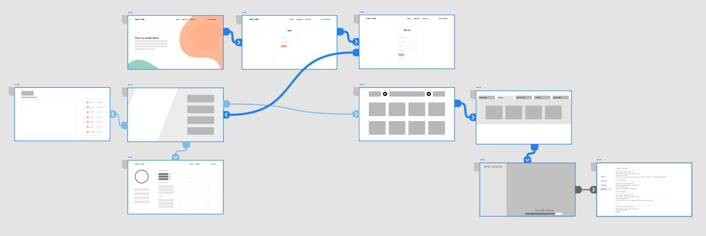
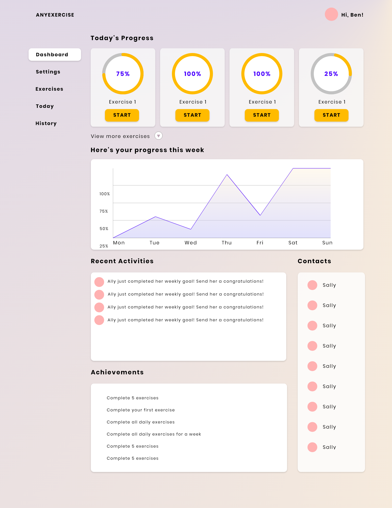

As a spoiler, we did end up winning both 1st place and also the 'Greatest Maker' Arcitecta Sponsor Prize.
The Covid Slump
With consecutive lockdowns in Melbourne, the closure of public spaces and gyms, it has become increasingly difficult for elderly people such as our grandparents to find the motivation to exercise, as it has simply become too inconvenient. We hence identified that this was a niche issue that had potential to be explored.
An opportunity to improve at-home exercise
Falling has always been a concern for older people. The Australian and New Zealand Falls Prevention Society found that for those over 65 years old, falls account for 40% of injury-related deaths. According to Better Health Victoria, many older people stop physical exercise due to beliefs that exercise is no longer appropriate. Common misconceptions include:
- Older people are frail and physically weak.
- The human body doesn't need as much physical activity as it ages.
- Exercising is hazardous for older people because they may injure themselves.
- Only vigorous and sustained exercise is of any use.
However, if you don't use it, you lose it. Better Health Victoria estimates that a lack of physical activity accounts for about half of the physical decline associated with ageing such as reduced muscle mass, strength and physical endurance, coordination and balance, joint flexibility and mobility, and bone strength.
My Role
I played a pivotal role in leading and overseeing the overall design strategy and direction for the project. My responsibilities encompassed a broad spectrum, including creating wireframes, developing prototypes, defining branding elements, and enhancing user interactions to ensure a seamless and engaging user experience.
A gamified web app
Much of the inspiration for the app was drawn from what was currently on the market. Looking at games such as Ring Fit or Wii Fit and how exactly users can enjoy exercise was important. We added things like trackers and progress bars so that users would feel accomplished and encouraged to continue. We sought research from psychologists that suggested positive reinforcement was beneficial in encouraging users to keep an exercise routine and habit.

The Product
AnyExercise is a web platform that utilises AI pose detection to determine correct form during exercises.
Additionally, the targeted challenges and trackers encourage older people to create a healthy habit and consistent pattern of physical activity. Pose detection during exercises gives real-time feedback on your progression of the activity.
A clean and minimalistic UI aids older users in tracking their progress with each exercise and also a visual guide on correctly matching the pose.

Check out our Devpost!
Surprisingly, we won our first hackathon ever!